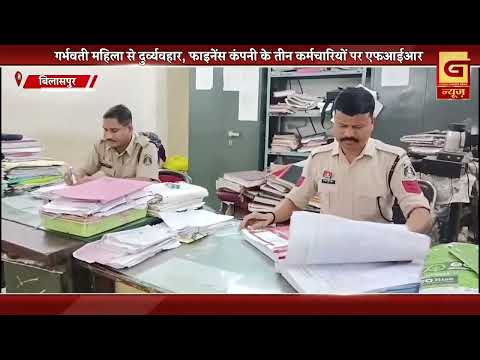

Bilaspur News Hub
1
BUSINESS
4
EDUCATION
1
EVENT
14
GOVERNMENT
7
HEALTH
35
INSTAGRAM NEWS
16
NEWS
16
POLICE
1
RAILWAY
4
SOCIAL
6
YOUTUBE VIDEOS
BUSINESS1

OpenStreetMap · Published: 2026-07-15 | Scraped: 2026-07-15 01:10:53
The new gym has been added to OpenStreetMap at its location on Sipat Road in Bilaspur, Chhattisgarh. It provides fitness facilities for residents in the area.
EDUCATION4

Lokswar · Published: Wed, 15 Ju | Scraped: 2026-07-15 13:06:21
Chief Minister Vishnu Deo Sway highlighted a new initiative linking rural students with future technologies to develop Chhattisgarh. The program aims to bridge the digital divide and prepare youth for modern careers. It marks a key step toward a technologically advanced state.

BREAKINGWeekly traffic classes in schools boost road safety / स्कूलों में हर सप्ताह लगेगी यातायात की क्लास
CG Wall · Published: Wed, 15 Ju | Scraped: 2026-07-15 18:53:56
Bilaspur launches a new road safety model with mandatory weekly traffic classes for students. The program aims to develop early awareness and reduce accidents by teaching safe road habits from childhood.
OpenStreetMap · Published: 2026-07-15 | Scraped: 2026-07-15 04:40:12
GEC Bilaspur Road now hosts a new College Outdoor Fitness Gym, offering modern equipment for students and locals. The facility aims to boost health, sports, and community fitness activities.

Guru Ghasidas Vishwavidyalaya · Published: 2026-07-15 | Scraped: 2026-07-15 11:22:39
Guru Ghasidas Vishwavidyalaya released an admission notice for the M.Sc. program in Digital Forensic and Information Security for the 2026-27 session. Candidates can apply as per the announced schedule and eligibility criteria.
EVENT1
G News Bilaspur · Published: 2026-07-15 | Scraped: 2026-07-15 15:21:54
This entry marks an event scheduled for 15 July 2026 at 02:00 EVN. It may refer to a broadcast, meeting, or public activity.
GOVERNMENT14

Nai Dunia Bilaspur · Published: Wed, 15 Ju | Scraped: 2026-07-15 04:40:12
The brutal killing of a watchman in Takhatpur has ignited public unrest, with families demanding one crore rupees compensation and employment. Despite administrative efforts to mediate, protests persist.

Mineral dept seizes 6 tractors for illegal sand transport / सीएम हेल्पलाइन पर एक्शन, 6 ट्रैक्टर जब्त
Lokswar · Published: Wed, 15 Ju | Scraped: 2026-07-15 09:50:09
Following a complaint on the CM helpline, the mineral department raided and seized six tractors transporting illegal sand and gravel. The action aims to curb illegal mining and protect resources.

CG Wall · Published: Wed, 15 Ju | Scraped: 2026-07-15 13:06:21
The Bharatiya Janata Party reshuffled its minority front, giving Syed Maqbool Ali a larger responsibility in the Durg division. This move is part of a broader organizational expansion aimed at strengthening party presence. Observers see it as a strategic effort to broaden outreach.
Lokswar · Published: Wed, 15 Ju | Scraped: 2026-07-15 15:21:54
Amar Singh Chauhan, a sub engineer with Bilaspur Municipal Corporation, was found dead in Civil Lines police station area. Authorities have launched an inquiry to determine the cause of his suicide.

CG Wall · Published: Wed, 15 Ju | Scraped: 2026-07-15 17:04:55
Bilaspur Municipal Corporation, citing financial crunch, faces allegations of wasteful expenditure including a costly bag and 6‑lakh worth sweets. The incident raises questions about fund utilisation and accountability.

CG Wall · Published: Wed, 15 Ju | Scraped: 2026-07-15 17:04:55
In Bilaspur, an ailing resident Anant Singh Chandela could not walk to collect benefits, so municipal staff arranged an auto‑rickshaw for him. The incident highlights both compassion and systemic gaps in service delivery.
The Hitavada · Scraped: 2026-07-15 11:22:39
The Chhattisgarh Legislative Assembly passed a resolution thanking the central government for successfully eradicating Naxalism in the state. The move acknowledges coordinated security efforts and underscores the need for continued development in formerly affected areas.
The Hitavada · Scraped: 2026-07-15 11:22:39
The Chhattisgarh Assembly saw intense disruption as members protested against acute shortages of fertilisers and seeds affecting farmers. Legislators demanded immediate government action to ensure supply and price stability for agricultural inputs, highlighting the urgent need for policy intervention.

The Hitavada · Scraped: 2026-07-15 09:50:09
The High Court in Bilaspur discovered a clerical error that mistakenly scheduled a hearing for the OBC reservation case. The court clarified that the actual debate will take place today, ensuring proper legal proceedings.

The Hitavada · Scraped: 2026-07-15 07:49:15
The cabinet approved proposals worth Rs 10,800 crore and an interest‑free guarantee of Rs 1,587 crore for moong procurement. The move aims to support farmers and ensure timely purchase of the pulse. It reflects the government’s focus on agricultural welfare and price stability.

District Administration Bilaspur · Published: 2026-07-15 | Scraped: 2026-07-15 07:49:15
The Bilaspur District Administration has released merit, selection, and waiting lists for the Block Project Manager position under the Chhattisgarh State Rural Livelihood Mission (Bihan). Candidates can check their status on the official portal to know if they are selected or on the waiting list.
District Administration Bilaspur · Published: 2026-07-15 | Scraped: 2026-07-15 09:50:09
The District Administration Bilaspur has issued a notice inviting applications for Yoga and Sports instructors to serve in PM SHRI scheme schools until March 31, 2027. Interested candidates can apply with required qualifications.
G News Bilaspur · Published: 2026-07-15 | Scraped: 2026-07-15 15:21:54
The Bilaspur‑based Janata Congress unveiled its new version, Janata Congress Chhattisgarh 2.0, aiming to revamp its political strategy. The announcement signals a fresh approach ahead of upcoming elections.
BREAKINGBilaspur Municipal Sub-engineer commits suicide / बिलासपुर नगर निगम के सब इंजीनियर ने आत्महत्या की
G News Bilaspur · Published: 2026-07-15 | Scraped: 2026-07-15 17:04:55
A sub-engineer of Bilaspur Municipal Corporation was found hanged at home, leaving a suicide note. The incident has shocked municipal staff and raised concerns about employee welfare.
HEALTH7

Lokswar · Published: Wed, 15 Ju | Scraped: 2026-07-15 07:49:15
A mega health camp was organized in Hardi and nearby villages, providing free medical examinations and specialist consultations. Villagers took advantage of the services, improving community health awareness.

BREAKINGSnake bite cases rise at Bilaspur Simhs / सावधान! बिलासपुर सिम्स में रोज सर्पदंश के 4-5 मामले
Nai Dunia Bilaspur · Published: Wed, 15 Ju | Scraped: 2026-07-15 09:50:09
Bilaspur Simhs reports 4-5 snake bite patients daily, with 12 scorpion cases in July. Authorities warn residents to take precautions against venomous creatures.
The Hitavada · Scraped: 2026-07-15 11:22:39
Workers and their families have united to oppose the privatisation of JLN Hospital in Bhilai. The protest highlights concerns over public healthcare access and job security, seeking to halt the government's privatisation plan.

The Hitavada · Scraped: 2026-07-15 07:49:15
ICMR study reveals seven life‑threatening bacteria in migratory birds, raising health concerns across India. The findings urge stricter monitoring of bird migration routes and public health preparedness. Authorities are advised to issue alerts for poultry farms and wildlife handlers.
OpenStreetMap · Published: 2026-07-14 | Scraped: 2026-07-14 19:00:05
Vandana Hospital, located on NH130A in Green Garden Colony, has been listed as a new healthcare facility in Bilaspur. It will provide local residents with medical services and improve health‑resource mapping in the area.

OpenStreetMap · Published: 2026-07-14 | Scraped: 2026-07-14 20:51:13
A new clinic/hospital named Bilaspur Hospital has been opened at Mangla Road, Green Garden Colony in Bilaspur. The facility is listed on OpenStreetMap and serves the local community.
OpenStreetMap · Published: 2026-07-14 | Scraped: 2026-07-14 22:47:29
The Shri Childrens Hospital has been listed on OpenStreetMap as a new medical facility located on Sipat Road in Bilaspur, Chhattisgarh. It will provide pediatric healthcare services to the local community.
INSTAGRAM NEWS35


The Environmental Protection Board and GST department inspected Amaron Royal Automotive in Bilaspur’s Trade Bihar area, checking compliance with environmental and tax rules. The visit signals tighter regulatory oversight for local industries.

A Tata Nexon following Google Maps crashed on an under‑construction bridge on the Bilaspur‑Urega road, falling about 30 feet. The accident highlights the danger of using maps on incomplete roads, prompting safety warnings.

A young man climbed a goods train at Pendra railway station, exposing himself to a deadly high‑voltage overhead line. Railway officials rescued him and warned against risky behaviour, stressing the need for safety awareness.


Narendra Khande, a guard at a juvenile observation home, was murdered late Sunday. The killing has shocked authorities and raised concerns about security in juvenile facilities, prompting a police investigation and manhunt.

Bilaspur's Amba petrol pump saw a fresh legal case after a recent fight between parties. The incident adds to ongoing tensions at the fuel station, and authorities are investigating the cause.

A nursing student was found murdered in Bhilai, shocking the community. Police are searching for the culprit, and investigations are underway to uncover the motive.


Recent news about Bilaspur Chopati highlights ongoing infrastructure improvements. The area is being upgraded to enhance connectivity and public amenities, with residents expecting better access and services.

During a night event in Bilaspur, the national flag was displayed without adequate illumination, causing public outrage. Authorities have been urged to ensure proper flag etiquette, sparking discussions on respecting national symbols.

Panic at Bilaspur bus stand after civic vandalism / बिलासपुर बस स्टैंड पर निगम की तोड़फोड़ से हड़कंप
A sudden act of vandalism by a civic body at Bilaspur bus stand caused widespread panic among commuters. The damage disrupted services and raised safety concerns, prompting a police investigation to identify those responsible.

Prk advertising with LED light, agrsen chowk Bilaspur


बंबर ठाकुर गोली कांड का फरार आरोपी हरियाण से गिरफ्तार, बिलासपुर पुलिस को मिली बड़ी सफलता

BUDHA MAL AND SON’S JEWELLERS
ADDRESS - BUDHA MAL EMPIRE
AIMA , NEAR - YAMINI HOTEL
PALAMPUR , DIST - KANGRA (H.P)
📱- 98167- 33444, 94599-77777

🌹 || जय माँ नैना देवी || 🌹
आज के दिव्य दर्शन | दिनांक: [14.07.2026]
"ऊंचे पहाड़ों वाली, भक्तों के दुखों को हरने वाली,
माँ नैना देवी के पावन चरणों में कोटि-कोटि प्रणाम।"
माँ के सुंदर स्वरूप के दर्शन कीजिए और अपने दिन की मंगलमयी शुरुआत कीजिए। करुणामयी माँ आपकी हर जायज मनोकामना पूरी करें।
👉 कमेंट में 'जय माता दी' लिखें और इस दिव्य दर्शन को अपनों के साथ भी शेयर करें। 🙏❤️

स्वारघाट में कार से 1.96 ग्राम चिट्टा बरामद, तीन आरोपी गिरफ्तार


A woman suffered a miscarriage after receiving a wrong injection at Sim's hospital, highlighting serious medical negligence. The incident has sparked outrage over patient safety and accountability in public health facilities.

Police monitoring at a local fair successfully curbed criminal activities, leading to seizure of 5,000 illegal steel rods. The operation demonstrates effective law enforcement and public safety measures.

An elderly prisoner serving a life sentence died in Bilaspur jail after slipping in the bathroom, raising concerns over inmate welfare and safety protocols. Authorities are investigating the circumstances.

A diesel theft case has caused a scandal after police records claimed the suspect was absconding, while a station-level deal suggested otherwise, leading to ASI suspension. The discrepancy highlights corruption and accountability issues.


Tourists are increasingly visiting the stunning waterfall in GPM district, drawn by its natural beauty and scenic trails. The influx boosts local tourism and highlights the region's untapped potential.

A social media post from Bilaspur Diaries asks followers if they have visited a particular location, encouraging community sharing of experiences.
NEWS16

Nai Dunia Bilaspur · Published: Wed, 15 Ju | Scraped: 2026-07-15 07:49:15
<img src="https://img.naidunia.com/naidunia/ndnimg/15072026/15_07_2026-cchori26engg.jpg" />चौहा गांव में इंजीनियर के सूने मकान से अज्ञात चोरों ने 15 हजार रुपये और सोने-चांदी के जेवर चोरी कर लिए। वारदात सीसीटीवी कैमरे में कैद हो गई है, जिसमें चोर का चेहरा साफ दिख रहा है। पुलिस मामले की जांच कर रही है

Nai Dunia Bilaspur · Published: Wed, 15 Ju | Scraped: 2026-07-15 07:49:15
<img src="https://img.naidunia.com/naidunia/ndnimg/15072026/15_07_2026-cctvdughtna.jpg" />बिलासपुर-रायपुर राष्ट्रीय राजमार्ग पर हिर्री माइंस के पास सोमवार को एक तेज रफ्तार कार की टक्कर से स्कूटी सवार 52 वर्षीय ग्रामीण देवेंद्र शर्मा की मौत हो गई।

The Hitavada · Scraped: 2026-07-15 07:49:15
An Indian Army Major completed the world's highest ultra marathon at Umling La in Ladakh, setting a new record at 19,300 feet. The feat highlights the region's challenging terrain and the growing popularity of ultra-running.
The Hitavada · Scraped: 2026-07-15 07:49:15
India has launched a UNSC campaign, with External Affairs Minister Jaishankar emphasizing a rule‑based maritime order. The initiative underscores India's commitment to global maritime security and cooperation.

The Hitavada · Scraped: 2026-07-15 07:49:15
The US attacked Iran, prompting Tehran to retaliate across the Middle East. The escalating exchange raises concerns over regional stability and potential broader conflict.

The Hitavada · Scraped: 2026-07-15 07:49:15
Former President Trump called on Gulf allies to fund US security costs, urging financial contributions. The demand reflects a shift in burden‑sharing among strategic partners.

The Hitavada · Scraped: 2026-07-15 07:49:15
The Hitavada · Scraped: 2026-07-15 07:49:15
The Hitavada · Scraped: 2026-07-15 07:49:15
The Hitavada · Scraped: 2026-07-15 07:49:15
The Hitavada · Scraped: 2026-07-15 07:49:15
The Hitavada · Scraped: 2026-07-15 07:49:15
A dry spell is expected to persist across Vidarbha until July 17, affecting agriculture and water resources. Farmers are advised to conserve water and monitor soil moisture levels. The prolonged heat may impact crop yields in the region.
The Hitavada · Scraped: 2026-07-15 07:49:15
The Hitavada · Scraped: 2026-07-15 07:49:15
The Hitavada · Scraped: 2026-07-15 07:49:15
G News Bilaspur · Published: 2026-07-15 | Scraped: 2026-07-15 17:04:55
The PRIME 15 JUL event highlights key developments in Bilaspur on July 15, covering important announcements and planned activities.
POLICE16

Nai Dunia Bilaspur · Published: Wed, 15 Ju | Scraped: 2026-07-15 04:40:12
Poachers set an electric current in Pachara pond to catch fish, inadvertently killing a large crocodile. The incident underscores illegal fishing dangers and wildlife protection concerns.

Lokswar · Published: Wed, 15 Ju | Scraped: 2026-07-15 04:40:12
Thirteen minors broke out of the Bal Sampaark Grih in Ambikapur, prompting a massive police search operation. Authorities are working swiftly to recapture the fugitives and ensure public safety.

Lokswar · Published: Wed, 15 Ju | Scraped: 2026-07-15 07:49:15
During Operation Aaghat in Sariguja range, Jashpur police seized ganja worth ₹1.20 crore and three vehicles. Two smugglers were arrested, marking a major crackdown on drug trafficking.

CG Wall · Published: Wed, 15 Ju | Scraped: 2026-07-15 09:50:09
A young man was arrested in Bilaspur after brandishing a sharp knife in public, causing panic among residents. Police seized the weapon and are investigating the incident.
Lokswar · Published: Wed, 15 Ju | Scraped: 2026-07-15 09:50:09
A high-speed trailer collided with a scooter in Pendra, killing the father and seriously injuring his wife and child. Authorities have launched an investigation into the accident.

Nai Dunia Bilaspur · Published: Wed, 15 Ju | Scraped: 2026-07-15 11:22:39
Three finance company employees have been booked for allegedly mistreating a pregnant woman in Bilaspur, sparking public outrage. Police are investigating the incident and seeking further details.
Lokswar · Published: Wed, 15 Ju | Scraped: 2026-07-15 11:22:39
Mobile snatchings are rising in Bilaspur as thieves stole a journalist's phone and fled. The incident underscores growing lawlessness and safety concerns among professionals.

Lokswar · Published: Wed, 15 Ju | Scraped: 2026-07-15 11:22:39
The GRP arrested another accused in a 55 kg ganja smuggling case, apprehending a fugitive from Odisha. This reinforces recent efforts to curb drug trafficking in the region.

CG Wall · Published: Wed, 15 Ju | Scraped: 2026-07-15 13:06:21
Four suspects were caught after they kicked a passerby off a highway and stole thousands of rupees. The incident occurred late at night on the Ratangarh-Kota road near Bilaspur. Police recovered the stolen cash and launched a crackdown on night‑time robbery.

CG Wall · Published: Wed, 15 Ju | Scraped: 2026-07-15 17:04:55
Police uncovered a multi‑city theft gang operating from Delhi, Meerut and Chandigarh, arresting key members in Bilaspur. Two major operations were conducted in a single day to curb rising thefts in the city.

CG Wall · Published: Wed, 15 Ju | Scraped: 2026-07-15 17:04:55
In a crackdown on illegal drug trade, Bilaspur police arrested a main accused involved in smuggling narcotic pills. The investigation will now expand to uncover the entire trafficking network.
Lokswar · Published: Wed, 15 Ju | Scraped: 2026-07-15 17:04:55
A suspicious fire claimed the lives of an elderly couple in Dharamjaygarh village, with their bodies discovered inside the home. Police have registered a case and launched an investigation into possible foul play.

CG Wall · Published: Wed, 15 Ju | Scraped: 2026-07-15 18:53:56
A young man was arrested near Rahangi Chowk after brandishing a sharp knife and intimidating pedestrians. Police prevented his attempt to spread fear in the area, reinforcing public safety measures.
The Hitavada · Scraped: 2026-07-15 11:22:39
A dead crocodile was found in Khuntaghat Dam, prompting concerns about wildlife safety and water management. Authorities have launched an investigation to determine the cause and prevent future incidents, highlighting the need for ecosystem monitoring.
The Hitavada · Scraped: 2026-07-15 07:49:15
The Economic Offences Wing arrested an ICICI Bank manager and a gold valuer in a Rs 23‑crore fake gold loan scam. The fraud involved falsifying loan applications and inflating gold collateral values. The case highlights vulnerabilities in bank loan verification processes.

G News Bilaspur · Published: 2026-07-15 | Scraped: 2026-07-15 15:21:54
Three Mahindra Finance employees are alleged to have harassed a pregnant woman in Bilaspur. The case has sparked public outrage and prompted a police investigation.
RAILWAY1

Lokswar · Published: Wed, 15 Ju | Scraped: 2026-07-15 07:49:15
The derailment of a goods train at Kargi Road railway station was caused by a discarded JCB bucket on the track. Ten individuals have been arrested for their role in leaving the equipment, prompting safety reviews.
SOCIAL4

BREAKINGSub‑Engineer commits suicide in Nagar Nigam colony, body found hanging / बिलासपुर में निगम कालोनी में सब इंजीनियर की खुदकुशी, फांसी पर लटकी लाश मिली, सुसाइड नोट बरामद
Nai Dunia Bilaspur · Published: Wed, 15 Ju | Scraped: 2026-07-15 09:50:09
A sub‑engineer working with the municipal corporation was found hanged in his colony, with a suicide note recovered. The incident has shocked the local community and raised concerns about workplace stress.
Ward No 14 residents suffer administrative apathy / वार्ड 14 के निवासियों को प्रशासनिक उदासीनता का सामना करना पड़ रहा है
The Hitavada · Scraped: 2026-07-15 09:50:09
Residents of Ward 14 in Bilaspur complain of neglect by local authorities, citing lack of basic services and unresponsive officials. The issue highlights broader problems of civic governance and citizen grievances.
BREAKINGVHP, Bajrang Dal protest at private school, minor vandalism / वीएचपी, बजरंग दल ने निजी स्कूल में विशाल प्रदर्शन किया, मामूली तोड़फोड़ की सूचना
The Hitavada · Scraped: 2026-07-15 09:50:09
Members of VHP and Bajrang Dal organized a large-scale protest at a private school in Bilaspur, resulting in minor vandalism. The demonstration reflects ongoing tensions over educational policies and cultural issues.
BREAKINGFamily opposition leads to youth suicide, girl critical / परिवार के विरोध ने युवती और युवक को आत्महत्या के लिए मजबूर किया, एक की मौत
The Hitavada · Scraped: 2026-07-15 07:49:15
A young couple facing family opposition committed suicide, resulting in the death of the youth and critical condition of the girl. The incident highlights the severe impact of forced marriages and familial pressure. Authorities are investigating the case and offering counseling services.
YOUTUBE VIDEOS6


Grand News Bilaspur provides the latest morning bulletin for July 15, 2026, covering regional updates and headlines. Stay tuned for comprehensive coverage from partner channels.


This is the evening final news bulletin for Bilaspur dated 15 July 2026. It provides the latest updates and happenings in the city.
A speeding car caused a major accident on the Bilaspur‑Raipur national highway, resulting in damage and injuries. Police are investigating the cause of the crash.
Four notorious robbers caught red-handed after loot / चार शातिर लुटेरे लूट की वारदात के बाद गिरफ्तार
Police apprehended four armed robbers who had carried out a recent looting incident. Authorities are questioning them about possible accomplices.
The municipal authority has rolled out updated guidelines for ration distribution in Bilaspur, effective immediately. The changes aim to improve transparency and reduce misuse of subsidies.
The Bilaspur High Court dismissed the state government's appeal, marking a legal setback for the administration. This decision highlights judicial oversight in state matters.